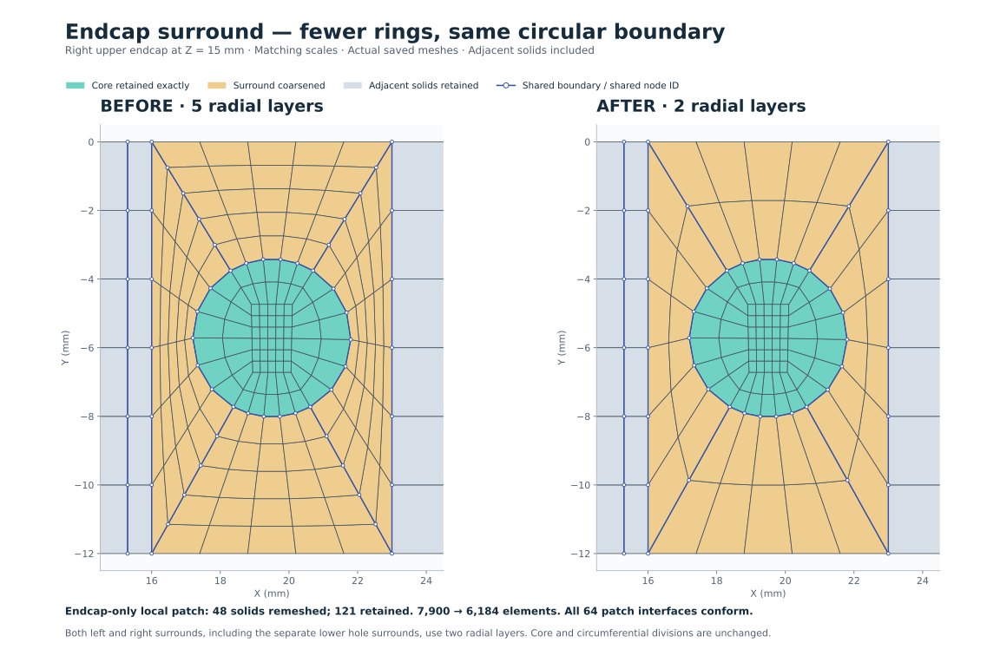

<!doctype html>
<html lang="en">
<meta charset="utf-8">
<meta name="viewport" content="width=device-width,initial-scale=1">
<title>Flexure bulk coarsening — before and after</title>
<style>
  *{box-sizing:border-box}body{margin:0;background:#e9eef3;color:#183544;font:15px system-ui,sans-serif}header{position:sticky;top:0;z-index:1;background:#142432;color:#f4f8fb;padding:12px 20px;display:flex;gap:18px;align-items:center;flex-wrap:wrap}header strong{margin-right:auto}nav{display:flex;gap:6px}button,a{font:inherit}button{cursor:pointer;border:1px solid #7992a5;border-radius:6px;padding:7px 12px;background:transparent;color:inherit}button[aria-pressed=true]{background:#65d5bb;border-color:#65d5bb;color:#102f2b}main{overflow:auto;padding:16px}img{display:block;width:auto;max-width:100%;max-height:calc(100dvh - 125px);margin:auto;background:white;box-shadow:0 2px 12px #172d3e20}main.zoom img{width:180%;max-width:none;max-height:none;min-width:1400px}footer{padding:0 20px 18px;color:#506576}footer a{color:#244f91}span{white-space:nowrap}
</style>
<header><strong>Flexure · 60.1% fewer elements</strong><nav aria-label="Comparison view"><button type="button" data-view="endcaps" aria-pressed="true">Endcaps</button><button type="button" data-view="detail" aria-pressed="false">Blade &amp; neighbors</button><button type="button" data-view="overview" aria-pressed="false">Whole part</button></nav><button type="button" id="zoom" aria-pressed="false">Zoom in</button><span>297 / 297 interfaces conform</span></header>
<main></main>
<footer>Actual saved meshes, identical scales. All eight blade meshes retained; blade 15 keeps three layers through thickness. <a href="endcaps.svg" id="original" target="_blank">Open full-size figure</a> · <a href="README.md">Case notes</a></footer>
<script>
  const figure=document.querySelector('img'),original=document.querySelector('#original');
  document.querySelectorAll('[data-view]').forEach(button=>button.addEventListener('click',()=>{
    document.querySelectorAll('[data-view]').forEach(b=>b.setAttribute('aria-pressed',String(b===button)));
    figure.src=original.href=button.dataset.view+'.svg';
    figure.alt=button.dataset.view==='endcaps'?'Before and after: two radial layers around the retained endcap core':button.dataset.view==='detail'?'Before and after: refined blade, surrounding solids and shared-node junctions':'Before and after: complete flexure mesh at matching scales';
  }));
  document.querySelector('#zoom').addEventListener('click',event=>{
    const zoom=document.querySelector('main').classList.toggle('zoom');
    event.currentTarget.setAttribute('aria-pressed',String(zoom));event.currentTarget.textContent=zoom?'Fit view':'Zoom in';
  });
</script>
</html>
